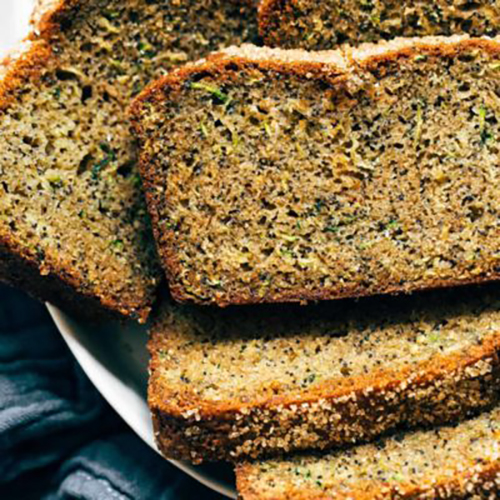

Lemon Poppyseed Zucchini Bread
Lemon Poppyseed Zucchini Bread with zucchini, brown sugar, zested
lemons, olive oil, ginger, and poppyseeds. The most healing
breakfast or snack!

INGREDIENTS
- 3 cups grated zucchini (about 2 zucchini)
- grated zest of 2 large lemons
- 2 teaspoons vanilla extract
- 3 large eggs
- 1 cup extra-virgin olive oil
- 2 cups all-purpose flour
- 1 teaspoon salt
- 1 teaspoon baking powder
- 1/2 teaspoon baking soda
- 3 tablespoons poppy seeds
- optional: tiny pinch of nutmeg
- optional: a small grated piece of fresh ginger
INSTRUCTIONS
- Drain zucchini: Preheat the oven to 350. In a small mixing bowl,
mix the zucchini with 1/4 cup brown sugar. Transfer the mixture
to a fine-mesh strainer set over the mixing bowl. Fill another small
bowl with water and set it directly on top of the zucchini so that it is
pushing down, pressing the water out into the bowl below.
- Add wet ingredients: Line a 9x5 loaf pan with parchment paper.
Whisk together the remaining brown sugar, eggs, lemon zest, and
vanilla until well blended. Beat in the olive oil gradually, whisking
it in until it's thoroughly incorporated.
- Add dry ingredients: Stir in the flour, salt, baking powder,
baking soda, poppy seeds, nutmeg, and ginger until just combined.
Add the pressed zucchini to the batter and stir it in gently
until evenly incorporated.
- Bake: Pour the batter into the prepared pan. Bake on the middle
rack of the oven for about 1 hour and 10 minutes. The outer crust
of the bread will be firm to the touch and on the darker side of
golden brown (see FAQs).
- Eat: Cool the bread in the pan for about 20 minutes. Remove, cut,
and serve (but also see FAQs about chilling the cake which is unusually delicious).
NUTRITION FACTS
Serves 1
Calories Per Serving: 378 |
| Total Fat 24.9g |
32% |
Cholesterol 0mg |
0% |
| Sodium 305.5mg |
13% |
Sugars 20.6g |
0% |
| Protein 10.8g |
22% |
Vitamin A 0µg |
0% |
| Vitamin C 0.4mg |
0% |
Iron 4.1mg |
23% |
| Potassium 577.8mg |
12% |
Phosphorus 341.2mg |
27% |